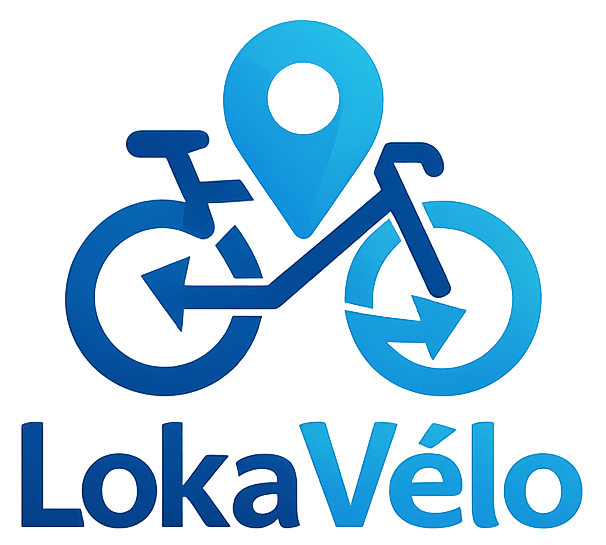

Dernière mise à jour : mai 2026
Les présentes Conditions Générales dʼUtilisation (CGU) régissent lʼutilisation de lʼapplication mobile LokaVélo, exploitée par Arno Bouiron, auto-entrepreneur, domicilié au 4, avenue des Chutes Lavie, 13004 Marseille.
LokaVélo est une plateforme de mise en relation entre propriétaires de vélos et locataires. LokaVélo nʼest pas partie au contrat de location conclu entre les utilisateurs et agit uniquement en qualité dʼintermédiaire technique.
Le service est accessible aux utilisateurs résidant en France ou à l’étranger, sous réserve qu’ils puissent utiliser les moyens de paiement proposés dans l’application et respecter les présentes conditions.
À ce jour, les vélos proposés à la location sur LokaVélo doivent être situés en France.
L’inscription nécessite la création d’un compte avec des informations exactes, complètes et à jour. L’utilisateur est seul responsable de la confidentialité de ses identifiants et de toute activité réalisée depuis son compte.
En créant un compte, l’utilisateur certifie avoir 18 ans ou plus et accepte les présentes Conditions Générales d’Utilisation.
LokaVélo se réserve le droit de refuser, suspendre ou supprimer tout compte, sans préavis ni indemnité, en cas d’informations inexactes, d’utilisation par une personne mineure, de comportement suspect, de signalement par d’autres utilisateurs, d’usage frauduleux ou de non-respect des présentes CGU.
Le locataire effectue une demande de location via lʼapplication. Le propriétaire accepte ou refuse la demande. En cas dʼacceptation, un contrat de location est conclu directement entre les deux parties.
LokaVélo ne garantit pas la disponibilité permanente des vélos publiés sur la plateforme.
Les paiements sont traités exclusivement via Stripe, prestataire de paiement sécurisé. LokaVélo nʼa pas accès aux données bancaires des utilisateurs (numéro de carte, IBAN, pièce dʼidentité), qui sont gérées directement par Stripe conformément à sa propre politique de sécurité.
LokaVélo prélève une commission de 12 % TTC sur le montant total de la location, à la charge exclusive du locataire.
Le versement au propriétaire intervient après la confirmation de la restitution du vélo, selon les délais de traitement de Stripe.
Une caution est prélevée sous forme dʼempreinte bancaire via Stripe au moment de la location. Elle nʼest pas débitée sauf en cas de dommages constatés.
En cas de dommages sur le vélo constatés lors de lʼétat des lieux de sortie et imputables au locataire, tout ou partie de la caution peut être retenue et reversée au propriétaire afin de couvrir les frais de réparation.
Le montant retenu doit être justifié par des devis, factures ou tout autre élément permettant d’évaluer les frais de réparation. En cas de désaccord, les parties sont invitées à contacter LokaVélo via la page Contact. LokaVélo peut, à sa discrétion, faciliter les échanges entre les utilisateurs afin de favoriser une résolution amiable. Toutefois, LokaVélo n’est pas partie au contrat de location conclu entre le propriétaire et le locataire et ne peut être tenu de trancher un litige entre eux.
Le locataire est responsable de la garde du vélo pendant toute la durée de la location. En cas de vol au domicile ou au lieu de stationnement du locataire, sa responsabilité est engagée. Le locataire doit impérativement respecter lʼobligation de stockage nocturne dans un lieu fermé (voir article 3).
Si le vélo est volé alors que le locataire avait correctement attaché le vélo avec lʼantivol homologué fourni par le propriétaire, la responsabilité du locataire est atténuée. Dans ce cas, le locataire doit :
La caution pourra être partiellement ou totalement libérée sur présentation de ce justificatif, à lʼappréciation du propriétaire.
Le propriétaire certifie que le vélo est en état de fonctionnement au moment de la remise, mais LokaVélo ne procède à aucune vérification physique des vélos publiés sur la plateforme.
LokaVélo agit exclusivement en tant quʼintermédiaire technique de mise en relation. À ce titre :
LokaVélo ne fournit pas, à ce jour, d’assurance spécifique couvrant les locations réalisées via la plateforme. Chaque utilisateur est invité à vérifier auprès de son assureur les garanties dont il bénéficie déjà.
L’assurance responsabilité civile peut, selon les contrats, couvrir certains dommages causés à des tiers lors de l’utilisation d’un vélo. En revanche, le vol, la perte ou les dommages subis par le vélo loué ne sont pas nécessairement couverts, notamment lorsque le vélo se trouve à l’extérieur du domicile ou dans un lieu non sécurisé.
Le locataire doit donc vérifier si son contrat couvre l’usage d’un vélo loué et la garde temporaire d’un bien appartenant à un tiers. Le propriétaire doit également vérifier si son vélo reste couvert lorsqu’il est confié à un locataire.
LokaVélo envisage de proposer ultérieurement une solution d’assurance dédiée. Tant qu’une telle solution n’est pas expressément indiquée dans l’application, aucune assurance spécifique n’est incluse dans le service.
Lʼutilisateur peut supprimer son compte à tout moment depuis lʼapplication. LokaVélo se réserve le droit de suspendre ou supprimer tout compte en cas de violation des présentes CGU, de comportement frauduleux ou de signalements répétés.
En cas de litige entre utilisateurs, LokaVélo peut être contacté via la page Contact pour tenter une médiation amiable, sans obligation de résultat.
Les présentes CGU sont soumises au droit français. En cas de litige avec LokaVélo, et à défaut de résolution amiable, les tribunaux compétents sont ceux du ressort de Marseille.
LokaVélo se réserve le droit de modifier les présentes CGU à tout moment. Les utilisateurs seront informés de toute modification substantielle via lʼapplication. La poursuite de lʼutilisation de lʼapplication après notification vaut acceptation des nouvelles conditions.